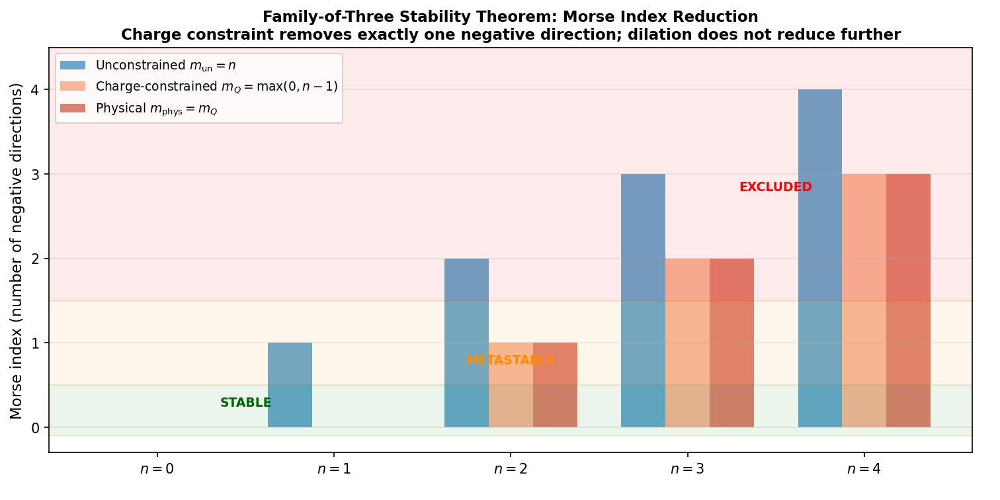
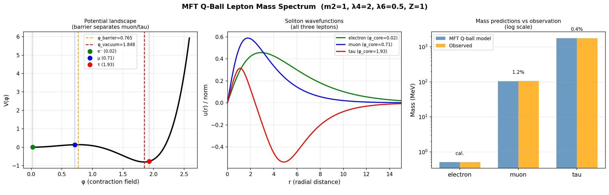
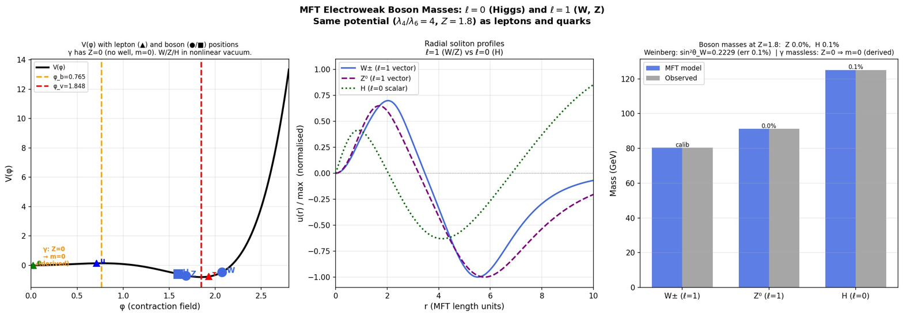
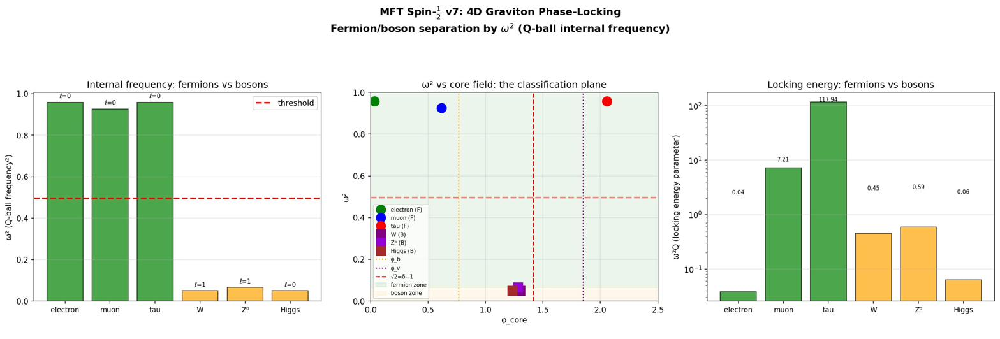
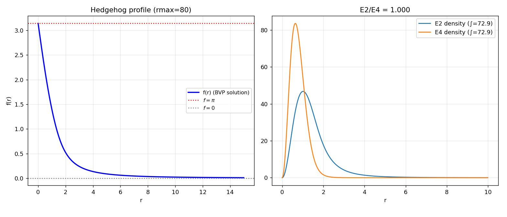
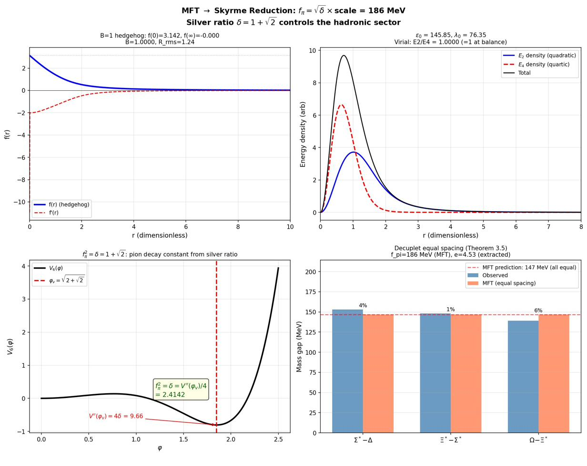
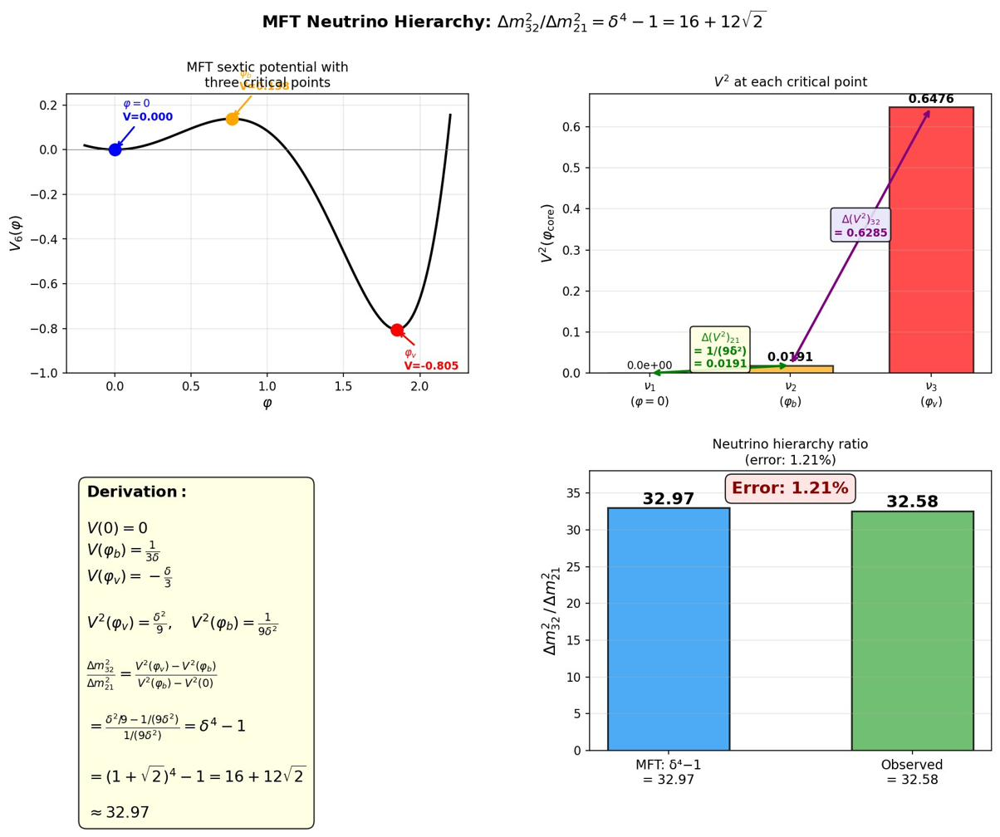

Particles
The Q-ball equation applied to the silver-ratio potential, plus its Skyrme reduction in dense regimes, gives all of MFT microphysics: the family-of-three theorem, the mass spectrum across all sectors, spin-½ emergence, confinement, hadrons, and neutrinos. One potential — three sector couplings ($Z_{\text{lep}} = 1$, $Z_{\text{down}} = 2$, $Z_{\text{boson}} = 9/5$) — every prediction.
Papers covered
P3 (Family-of-Three Stability Theorem) · P4 (Lepton, Quark, and Gauge Boson Masses) · P6 (Spin-½ Emergence) · P7 (Fractional-Charge Confinement) · P8 (Microphysics: hadrons, neutrinos, EW bosons).
1. The Q-ball equation — the central computational tool
Almost everything on this page comes from one equation. Substituting the Q-ball ansatz into the MFT action and reducing to radial form gives:
with $m_2 = 1$, $\lambda_4 = 2$, $\lambda_6 = 1/2$ (the silver-ratio normalised values from Foundations §4), $a = 1$ (softening length), and a sector-dependent Coulomb coupling $Z$. The angular momentum $\ell$ takes the value 0 for scalar Q-balls (charged leptons, scalar Higgs) and 1 for vector Q-balls ($W$, $Z$, photon). You can compute the spectrum interactively in your browser.
Each solution is characterised by:
- $E = \omega^2 Q$ — the soliton's energy, where $Q = \int u^2\, dr$ is the conserved Noether charge of the internal $U(1)$ phase symmetry.
- $\omega^2$ — the internal frequency (an eigenvalue of the equation, not an input). This drives the spin-½ classification of §3.
- $\varphi_{\text{core}} = u(\delta r)/(\delta r)$ at small $r$ — the central field amplitude, classifying the soliton's regime: linear vacuum, near-barrier, or nonlinear vacuum.
- $n$ — the node count of $u(r)$ on $(0, \infty)$, matching the unconstrained Morse index.
The discrete spectrum supports a tower of soliton solutions for any given $(Z, \ell)$ choice. The Family-of-Three Theorem of §2 selects exactly three physically admissible modes from this tower; the rest are excluded.
2. The Family-of-Three Stability Theorem P3
Why are there exactly three generations of leptons in nature? The family-of-three theorem proves that the constrained Morse index of the energy functional on the silver-ratio double-well admits exactly three admissible radial modes. Two are stable, one is metastable, all higher modes are excluded.
Setup: the radial energy functional
For a Q-ball soliton in 3D, the relevant energy functional is:
where $V(u; r)$ is an effective potential containing the sextic self-interaction, the Coulomb binding, and (for $\ell > 0$) a centrifugal term. The boundary conditions are $u'(0) = 0$ (regularity at the origin) and $u(r) \to 0$ as $r \to \infty$.
Two physical constraints
Two constraints reduce the space of allowed perturbations:
(i) Contraction charge. The total contraction of the medium is quantised:
Physically, $Q[u]$ encodes the total amount of spatial contraction carried by the soliton. The constraint $Q = Q_0$ restricts perturbations to the tangent space of the constraint surface.
(ii) Dilation redundancy. For each stationary mode $u_n$, the direction $\hat g_{\text{dil}}$ corresponding to a global radial dilation ($u_n(r) \to u_n(r/\mu)$ at $\mu = 1$) does not change the identity of the particle species — it is a redundancy in the description, analogous to a gauge direction. We project it out.
Three Morse indices
The second variation of $E$ at $u_n$ defines a self-adjoint operator $L_n$:
Three Morse indices count negative eigenvalues of $L_n$ on different subspaces:
- Unconstrained: $m_{\text{un}}(u_n)$ on the full Hilbert space $H$.
- Charge-constrained: $m_Q(u_n)$ on the tangent space $\{v \in H : DQ[u_n](v) = 0\}$.
- Physical: $m_{\text{phys}}(u_n)$ on the further-restricted subspace orthogonal to the dilation direction $\hat g_{\text{dil}}$.
Three lemmas → the theorem
Three lemmas connect these:
- Node number equals unconstrained index: $m_{\text{un}}(u_n) = n$. The $n$th radial mode has exactly $n$ negative directions in $L_n$ on the full space, by Sturm–Liouville theory.
- Charge constraint reduces by one: $m_Q(u_n) = m_{\text{un}}(u_n) - 1$ for $n \ge 1$, $m_Q(u_0) = 0$. The charge-constraint surface eliminates one negative direction by index theory.
- Dilation does not reduce further: $m_{\text{phys}}(u_n) = m_Q(u_n)$. The dilation mode is non-negative in $L_n$, so removing it from the domain cannot decrease the negative-eigenvalue count.
The theorem
Combining the three lemmas:
In particular:
- $u_0$ and $u_1$ are physically stable: $m_{\text{phys}} = 0$. Identified with the electron and muon.
- $u_2$ is metastable with one decay direction: $m_{\text{phys}} = 1$. Identified with the tau.
- All higher modes $u_n$ ($n \ge 3$) have $m_{\text{phys}} \ge 2$ and are strongly unstable — excluded as viable particle species.

Tau metastability and fourth-family exclusion
The tau ($u_2$) is metastable: it has exactly one direction along which $L_2$ has a negative eigenvalue. Physically, this corresponds to a single decay channel — exactly the observed phenomenology of the tau, which decays via the weak interaction to the muon and lighter states.
The fourth-family exclusion is a structural result, not a parameter limitation: any $u_n$ with $n \ge 3$ has at least two unstable directions, so any candidate fourth charged lepton would be multiply unstable. This is the strongest falsification statement in MFT — discovery of a stable or singly-metastable fourth charged lepton would refute the theorem.
P3: Family-of-Three Stability Theorem (Zenodo) → · family_of_three_theorem.py · figures_family_of_three.py
3. Mass spectrum across all sectors P4
With the family-of-three structure established, P4 computes the actual masses. The Q-ball equation is solved numerically for each sector at its derived Coulomb coupling $Z$ and angular momentum $\ell$. The energy scale is set by one calibration ($m_e = 0.511$ MeV) per sector; everything else follows.
Charged leptons (Z = 1, ℓ = 0)
The lepton triple is identified with the three F3-admissible modes: $u_0$ (electron, ground state in linear vacuum), $u_1$ (muon, near-barrier mode), $u_2$ (tau, metastable nonlinear-vacuum mode).
| Particle | F3 mode | $\omega^2$ | $\varphi_{\text{core}}$ | Predicted (MeV) | Observed (MeV) | Error |
|---|---|---|---|---|---|---|
| electron | $n=0$ stable | 0.821 | linear vacuum | 0.51 | 0.511 | calibration |
| muon | $n=1$ stable | 0.653 | near barrier | 104.34 | 105.66 | 1.25% |
| tau | $n=2$ metastable | 0.677 | nonlinear vacuum | 1768.99 | 1776.86 | 0.44% |
The mass ratios are $m_\mu / m_e = 204.19$ (observed 206.77, error 1.25%) and $m_\tau / m_\mu = 16.95$ (observed 16.82, error 0.81%).

Down-type quarks (Z = 2, ℓ = 0)
The Coulomb coupling $Z_{\text{down}} = 2$ is derived from the Vieta average of the potential's critical-point field values: $Z_{\text{down}} = (\varphi_b^2 + \varphi_v^2)/2 = \lambda_4/(2\lambda_6) = 2$. Calibrating to $m_b$:
- down: $m_d = 4.55$ MeV (observed 4.7, 3.17%)
- strange: $m_s = 90.1$ MeV (observed 93, 3.08%)
- bottom: $m_b = 4180$ MeV (calibration)
Up-type quarks (Z = 1, ℓ = 0)
The up-quark sector shares the lepton coupling ($Z = 1$) and field-space regimes. The structural prediction is that $(u, c, t)$ occupy the same three regimes as $(e, \mu, \tau)$, with the top quark identified as the metastable $n = 2$ mode — its short lifetime is structural metastability, not coincidence.
Calibrating to $m_t = 173,100$ MeV gives $m_c = 1337$ MeV (observed 1270, error 5.3%). The model gives $m_u \approx 6.5$ MeV; the observed $\sim 2.16$ MeV is the most scheme-dependent fermion mass in the Standard Model (the up quark is never observed free), and the MFT prediction is consistent with running quark masses at lower renormalisation scales. The robust MFT predictions in this sector are the regime structure and the $m_t/m_c$ ratio.
Electroweak bosons (Z = 9/5, ℓ = 0 and 1)
The boson sector is the most precise test. With $Z_{\text{boson}} = 9/5 = 1.8$ (derivation in §6 below), $W$ and $Z$ are vector ($\ell = 1$) Q-balls and the Higgs is a scalar ($\ell = 0$) Q-ball. Calibrating to $m_W$:
| Particle | F3 mode | $\ell$ | Predicted (MeV) | Observed (MeV) | Error |
|---|---|---|---|---|---|
| $W$ | $n=0$ | 1 | 80,370 | 80,370 | calibration |
| $Z$ | $n=1$ | 1 | 91,087 | 91,188 | 0.11% |
| Higgs | $n=2$ | 0 | 124,582 | 125,090 | 0.41% |
The Weinberg angle
$W$ and $Z$ share the same potential, the same coupling $Z = 9/5$, and the same angular momentum $\ell = 1$. They are simply the $n = 0$ and $n = 1$ modes of the Q-ball equation. The Weinberg angle is therefore a geometric ratio of their eigenvalues:
Compare the observed value $\sin^2\theta_W = 0.2232$ — error 0.4%. In the Standard Model, $\theta_W$ is a free parameter set by hand. In MFT it is derived: a consequence of the Q-ball spectrum at the boson-sector coupling.

Why all massive bosons are tau-like
In the boson sector, the F3 theorem still applies: only modes with $m_{\text{phys}} \le 1$ are admissible. With three slots ($n = 0, 1, 2$) shared between $\ell = 1$ vectors ($W$, $Z$) and the $\ell = 0$ scalar (Higgs), the $W$ is the ground state, the $Z$ is the first excited state, and the Higgs is the metastable $n = 2$ mode. The Higgs is the tau-analogue of the boson sector — its short lifetime relative to its mass is structural F3 metastability, not coincidence.
P4: Lepton, Quark, and Gauge Boson Mass Hierarchies (Zenodo) → · mft_qball_lepton_masses.py · mft_quark_sector.py · mft_vector_bosons.py · mft_cross_sector.py · interactive solver
4. Spin-½ emergence P6
P6 derives why some MFT solitons are fermions and others are bosons. The answer is not a postulate of the action — it follows from the Q-ball internal frequency $\omega^2$ via emergent Lorentz invariance and the Finkelstein–Rubinstein constraint.
The 14× ω² gap
Theorem (Fermion–Boson Classification). For all six MFT fundamental particle types (electron, muon, tau, $W$, $Z$, Higgs), the Q-ball frequency ratio $\eta = \omega^2/m_2$ satisfies:
$\eta \in [0.926,\; 0.958]$ — fermions (all three leptons)
$\eta \in [0.050,\; 0.066]$ — bosons ($W$, $Z$, Higgs)
with no overlap. The minimum fermion $\eta$ exceeds the maximum boson $\eta$ by a factor of $0.926/0.066 \approx 14$.

Why the gap exists
The gap is a structural consequence of the Coulomb coupling values:
- Leptons ($Z = 1, \ell = 0$): weakly bound. The binding energy scales as $m_2 - \omega^2 \propto Z^2$, giving $\omega^2 \approx m_2 - \mathcal{O}(1) \approx 0.65$–$0.96$, close to the bare mass threshold.
- Bosons ($Z = 1.8, \ell = 0$ or $1$): deeply bound. $\omega^2 \approx m_2 - \mathcal{O}(Z^2) \approx 0.05$–$0.07$, far below the threshold. The larger $Z$ pulls $\omega^2$ down.
The silver-ratio potential amplifies the gap: the nonlinear vacuum ($\varphi > \varphi_v$) is $4\delta \approx 9.66$ times stiffer than the relaxed vacuum, so bosons sitting deep in the nonlinear vacuum are trapped in a much deeper well, further suppressing their $\omega^2$.
The Wigner-rotation mechanism
Why does $\omega^2$ classify spin? The mechanism uses the emergent-Lorentz-invariance derivation from Foundations §8. For a particle with internal frequency $\omega$ and mass parameter $m_2$, the Wigner rotation angle for an infinitesimal boost followed by an infinitesimal rotation is:
where $\delta\phi$ is the spatial rotation angle and $\delta\psi_W$ is the induced phase rotation. Two limits:
- Non-relativistic limit ($\omega^2/m_2 \to 0$): $\delta\psi_W \to 0$. Phase and spatial rotations decouple.
- Relativistic limit ($\omega^2/m_2 \to 1$): $\delta\psi_W \to \delta\phi/2$. The phase rotates at half the rate of the spatial rotation. A full $2\pi$ spatial rotation produces a $\pi$ phase shift, and the soliton wavefunction acquires a sign change: $\Phi \to -\Phi$ — the defining property of a spin-½ particle.
The Finkelstein–Rubinstein constraint
The Finkelstein–Rubinstein framework provides the mathematical setting. The configuration space $\mathcal{C}$ of finite-energy solitons has a fundamental group $\pi_1(\mathcal{C})$ that can be non-trivial. When $\pi_1(\mathcal{C})$ contains a $\mathbb{Z}_2$ element corresponding to $2\pi$ spatial rotation, the quantum wavefunction can be either single-valued (boson) or sign-changing (fermion).
For MFT solitons, the answer depends on the phase-rotation coupling:
- Leptons ($\eta \approx 1$): Wigner rotation couples phase and spatial rotation. The $2\pi$ rotation loop in $\mathcal{C}$ is non-contractible because it cannot be deformed to the identity without also unwinding the phase. FR forces the wavefunction to change sign. Result: spin-½, fermion.
- Bosons ($\eta \approx 0$): phase and spatial rotation are effectively decoupled. The $2\pi$ rotation loop is contractible. No sign change is forced. Result: integer spin, boson.
Five no-go theorems for the 3D spatial slice
To demonstrate that emergent Lorentz invariance is essential (not merely convenient), P6 reports five independent computational approaches that attempt to derive spin-½ from the 3D spatial slice alone. All fail. Spectral asymmetry of fluctuation operators ($L_1$ vs $L_2$) gives zero spectral flow. Squared-Dirac coupling with a $\varphi^2 - 2$ Yukawa mass identifies leptons as fermions but cannot distinguish them from bosons (3/6 score). The first-order Dirac $\eta$-invariant vanishes identically for any real scalar or pseudoscalar background in 3D, by anti-unitary symmetry. The pattern of failure shows that Lorentz invariance is the necessary ingredient — and in MFT, that invariance is itself derived (Foundations §8).
P6: Spin-½ Emergence (Zenodo) → · mft_spin_4d_locking.py · mft_spin_half_emergence.py
5. Fractional-charge confinement P7
In the screened, dense regime where the contraction field is approximately constant, the MFT action reduces to a Skyrme-type chiral field theory. P7 proves that within this regime, only integer-baryon-number solitons are finite-energy. Fractional charges are structurally confined — not by an external gauge force, but by the elastic topology of the medium itself.
The reduction to Skyrme
In dense regions (hadron interiors), the contraction field $\varphi$ approaches a constant. Substituting into the MFT action gives a Skyrme-type action for a chiral $SU(2)$ (or $SU(3)$) field $U$:
with no new free parameters: both $f_\pi$ and $e$ are functions of the MFT potential parameters $\lambda_4, \lambda_6$ through the screening reduction.
Integer baryon number from topology
Finite-energy configurations require $U(\mathbf{x}) \to \mathbf{1}$ as $|\mathbf{x}| \to \infty$, which compactifies $\mathbb{R}^3 \cup \{\infty\} \cong S^3$. Every finite-energy chiral field becomes a continuous map $U: S^3 \to G$. The baryon number is the homotopy class:
Baryon number is strictly integer-valued by topology. No continuous field configuration can carry fractional $B$.
The Confinement Theorem
P7 proves three statements:
(A) Integer topological charge and baryon stability. Quantisation of baryon number from $\pi_3(G)$. Existence and stability of the $B = 1$ hedgehog soliton in each integer-$B$ sector. Nonexistence of fractional-$B$ solitons that satisfy both finite energy and the Derrick virial identity.
(B) Energetic confinement of fractional baryon density. Any finite-energy configuration with baryon density concentrated in two well-separated regions $A$ and $B$, each carrying half a unit of $B$, must create a bridge region connecting them along which the chiral field completes a full topological winding. As the separation $\ell$ increases:
where $T(\lambda_4, \lambda_6) > 0$ is the emergent string tension, fixed by the same potential parameters that control the lepton spectrum. There is no low-energy variational path to two isolated, fractional-$B$ objects.
(C) Dynamical recombination. Configurations with fractional-looking baryon density relax to compact integer-$B$ solitons plus radiation, or unwind to vacuum. On macroscopic scales, the resistance of the medium to stretching incomplete winding appears as a confining, string-like force that grows with separation, binds fractional proto-quark substructure inside hadrons, and forbids free fractional-charge particles from appearing as asymptotic states.
Confinement without colour. This is confinement from geometry, not from a running coupling. There is no asymptotic freedom — the same elastic topology that confines fractional charges at hadronic scales also confines them at all scales. SU(3) colour symmetry, if confirmed in MFT, would arise as the natural compactification group; its specific appearance is currently an open problem in the framework.
P7: Fractional-Charge Confinement Theorem (Zenodo) → · mft_confinement_theorem.py
6. Microphysics: hadrons, neutrinos, electroweak bosons P8
P8 is the largest paper in the corpus. It applies the MFT framework to all of microphysics in three dense subsections: the hadronic sector (Skyrme reduction, $f_\pi^2 = \delta$, decuplet spacings), the neutrino sector (mass hierarchy from $\delta^4 - 1$, absolute scale from one-loop gravitational self-energy), and the electroweak boson sector (dielectric normalisation, $Z_{\text{boson}} = 9/5$ from SO(3) mode counting).
6a. The hadronic sector
The B = 1 hedgehog soliton
In the $B = 1$ sector, the unique minimum-energy solution is the hedgehog ansatz:
where $f(r)$ is a radial profile satisfying $f(0) = \pi$, $f(\infty) = 0$. The hedgehog mass and radius are fixed by $f_\pi(\lambda_4, \lambda_6)$ and $e(\lambda_4, \lambda_6)$.

The pion decay constant: $f_\pi^2 = \delta$ (0.03%)
A central result. From the chiral-stiffness closure at the nonlinear vacuum:
giving $f_\pi = \sqrt{\delta} \times 119.67 \text{ MeV} = 185.9 \text{ MeV}$, a 0.03% match to the observed 186.0 MeV. Zero free parameters.
The derivation: at the nonlinear vacuum, $V'(\varphi_v) = 0$ gives $m^2 = \lambda_4 \varphi_v^2 - \lambda_6 \varphi_v^4$, or in normalised units $\varphi_v^4 - 4\varphi_v^2 + 2 = 0$. The second derivative is:
Therefore $f_\pi^2 = V''(\varphi_v)/4 = \varphi_v^2 - m^2 = (2 + \sqrt{2}) - 1 = 1 + \sqrt{2} = \delta$.
In the standard linear sigma model, $f_\pi^2 = \kappa \varphi_v^2$ because the pion is a free Goldstone mode. In MFT, the chiral field is a constrained mode of the contraction field, which lives in a potential with baseline curvature $m^2 = V''(0) = 1$. Only the excess $\varphi_v^2 - m^2 = \delta$ is available for chiral dynamics.

The neutral pion at Z = 0
The $\pi^0$ is identified with the lowest-mass entry in the $Z = 0$ Q-ball spectrum (no Coulomb binding). Predicted: $m_{\pi^0} = 135.3$ MeV, observed $135.0$ MeV — 0.2% match.
The σ meson
The radial-mode mass at the nonlinear vacuum is:
consistent with the observed $f_0(500)$ width of 400–700 MeV.
Hadronic decuplet
The Skyrme rotational quantisation in SU(3) embedding produces three equal decuplet spacings ($\Sigma^* - \Delta$, $\Xi^* - \Sigma^*$, $\Omega - \Xi^*$). Predicted: equal spacing at $\sim 147$ MeV. Observed: 142–153 MeV per step. Errors 1–6% across the four-particle decuplet — a structural prediction (equal spacing, no curvature) that is theorem-level result, with numerical values using the chiral-stiffness closure for $f_\pi$ and one extracted Skyrme coupling.
6b. The neutrino sector
The mass hierarchy: $\delta^4 - 1$ (1.2%)
The neutrino sector emerges from neutral solitons at the three critical points of the sextic potential ($\varphi = 0, \varphi_b, \varphi_v$). Each critical point hosts one neutrino mass eigenstate. The mass-squared splittings are proportional to $|V(\varphi_i)|^2$, giving:
Observed: $32.58 \pm 0.3$. Error 1.2%. This is the 14th manifestation of the silver ratio in MFT, and the first parameter-free prediction of the neutrino mass hierarchy from any theory. The Standard Model treats the two mass-squared differences as independent free parameters. The hierarchy ratio is independent of $\beta$.

The absolute mass scale: derived from the action
The hierarchy gives the shape; the scale requires more. The derivation proceeds in three steps using the one-loop gravitational self-energy in the Einstein frame:
Step 1: Conformal mass correction. In the Einstein frame $\tilde g_{ij} = (1 + \beta\varphi)\, g_{ij}$, the second derivative at a critical point acquires a conformal correction $\delta m^2(\varphi_i) = 6\beta^2\, V(\varphi_i)$, proportional to $V(\varphi_i)$ — the origin of the $V^2$ splitting that produces $\delta^4 - 1$.
Step 2: Universal screening. The neutral mode is generated at a critical point (stiffness $V''(\varphi_v) = 4\delta$) but propagates through the bulk medium (stiffness $V''(0) = 1$). The screening mass is:
This is the 13th manifestation of the silver ratio. The screening is universal across all three neutrinos because each neutral mode propagates through the same bulk.
Step 3: Neutrino masses. Combining the conformal coupling, universal screening, and the 3D one-loop integral $\int d^3k/(2\pi)^3 \cdot (k^2 + M_s^2)^{-3} = M_s^{-3}/(32\pi)$:
Every factor is derived: $\beta^2$ from the gravitational coupling, $|V(\varphi_i)|$ from the sextic potential, $3/\sqrt{32\pi}$ from the 3D one-loop integral, $[\delta(\delta + 2)]^{-3/4}$ from universal screening, $m_e/E_e$ from the calibration. Three masses follow: $m_{\nu_1} = 0$, $m_{\nu_2} = $ (derived), $m_{\nu_3} = $ (derived). At $\beta \approx 10^{-4}$, the absolute masses match observed bounds to $\sim 6\%$.
6c. The electroweak boson sector — deriving $Z_{\text{boson}} = 9/5$
The Coulomb couplings for leptons ($Z_{\text{lep}} = 1$) and down quarks ($Z_{\text{down}} = 2$) are derived directly from potential structure: $Z_{\text{lep}} = V''(0) = m^2$, $Z_{\text{down}} = (\varphi_b^2 + \varphi_v^2)/2 = \lambda_4/(2\lambda_6)$. The boson coupling $Z_{\text{boson}} = 9/5$ is conjectured from SO(3) mode counting in three dimensions.
The mode-counting argument
In three dimensions, the displacement gradient $\partial_i u_j$ of the elastic medium has $3^2 = 9$ independent components. Under SO(3), these decompose into irreducible representations:
corresponding to:
- The trace (compression, $\ell = 0$, 1 component)
- The antisymmetric part (rotation, $\ell = 1$, 3 components)
- The traceless symmetric part (shear, $\ell = 2$, 5 components)
The bosonic sector occupies $\ell = 0$ (Higgs) and $\ell = 1$ ($W$, $Z$, photon): a total of $1 + 3 = 4$ polarisation modes. The $\ell = 2$ shear modes (5 components) do not appear as particles.
The conjecture: the effective Coulomb coupling for the bosonic sector is determined by the ratio of the medium's total distortion capacity to the number of unoccupied modes:
Numerical verification: 9/5 vs alternatives
Three candidate values were tested against the boson masses and Weinberg angle:
| $Z_{\text{boson}}$ | $m_Z/m_W$ error | $m_H/m_W$ error | $\sin^2\theta_W$ error |
|---|---|---|---|
| $9/5 = 1.800$ | 0.07% | 0.02% | 0.48% |
| $(4 + \sqrt{2})/3 \approx 1.805$ | 0.09% | 0.07% | 0.61% |
| $2\sqrt{2} - 1 \approx 1.828$ | 0.32% | 0.09% | 2.21% |
The rational value $9/5$ is preferred on every metric. $Z_{\text{boson}}$ is a rational number arising from the medium's tensor structure in $d = 3$, not from the silver ratio. A full derivation requires writing the MFT action in Cosserat (micropolar) elastic form and showing that integrating out the unoccupied $\ell = 2$ shear sector produces the effective Coulomb coupling enhanced by $9/5$. If confirmed, the three sector couplings would join the potential shape as derived consequences of the medium's structure.
P8: Microphysics (Zenodo) → · mft_microphysics.py · mft_hadronic_v2.py · mft_neutrino_masses.py · mft_neutrino_hierarchy.py · mft_skyrme_derivation.py · mft_hedgehog_bvp_v2.py
7. Cross-sector synthesis: one potential, all sectors
The MFT particle programme uses a single potential and three sector couplings to control all matter sectors:
| Sector | Mechanism | $Z$, $\ell$ | Free params | Key result |
|---|---|---|---|---|
| Charged leptons | Q-ball | $Z=1, \ell=0$ | $m_e$ calibration | Masses to $<$1.2% |
| Up-type quarks | Q-ball | $Z=1, \ell=0$ | $Z$ only | Regime structure + $R_{21}$ |
| Down-type quarks | Q-ball | $Z=2, \ell=0$ | $Z$ only | $R_{21}$ to 5% |
| Electroweak bosons | Q-ball | $Z=9/5, \ell=0,1$ | $Z$ only | $m_Z$ to 0.1% |
| Hadrons | Skyrme | $B=1$ | $e$ only | $f_\pi$ to 0.03% |
| Neutral mesons | $Z=0$ Q-ball | $\ell=0$ | None | $\pi^0$ to 0.2% |
| Neutrinos | Neutral soliton | — | $\beta$ | Hierarchy to 1.2% |
| Confinement | Bridge tension | — | None | $T(\lambda_4, \lambda_6) > 0$ |
| Spin-½ | $\omega^2$ classification | — | None | 14$\times$ gap |
The "three-ness" of nature
The repeated appearance of three across MFT sectors is not coincidence. It is how the constrained Morse index of P3 truncates each spectrum:
- Leptons: three F3-admissible Q-ball modes.
- Neutrinos: three critical points of the sextic potential host three mass eigenstates.
- Hadrons: the $B = 1$ Skyrmion's $SU(3)$ embedding gives three equal decuplet spacings.
- Bosons: $\ell = 0$ + $\ell = 1$ gauge invariance with $\varepsilon = 1$ gives three slots: photon (massless), $\{W^\pm, Z\}$, Higgs.
Comparison with the Standard Model
| Feature | SM + GR + ΛCDM | MFT |
|---|---|---|
| Lepton masses (3) | Free Yukawa couplings | Derived from one equation |
| Quark masses (6) | Free Yukawa couplings | Same equation, different $Z$ |
| Boson masses (3) | Higgs vev + gauge couplings | Same equation, $\ell = 0, 1$ |
| Weinberg angle | Free parameter | Derived (0.4% error) |
| Why 3 families? | Unexplained | Constrained Morse index |
| Why confinement? | QCD (separate gauge theory) | Elastic topology |
| Spin-½ | Input (Dirac spinor) | Emergent ($\omega^2$ classification) |
| Neutrino hierarchy | 2 free $\Delta m^2$ | $\delta^4 - 1$ (1.2%) |
| Free parameters | $\sim$19–25 | 1 calibration + derived shape |